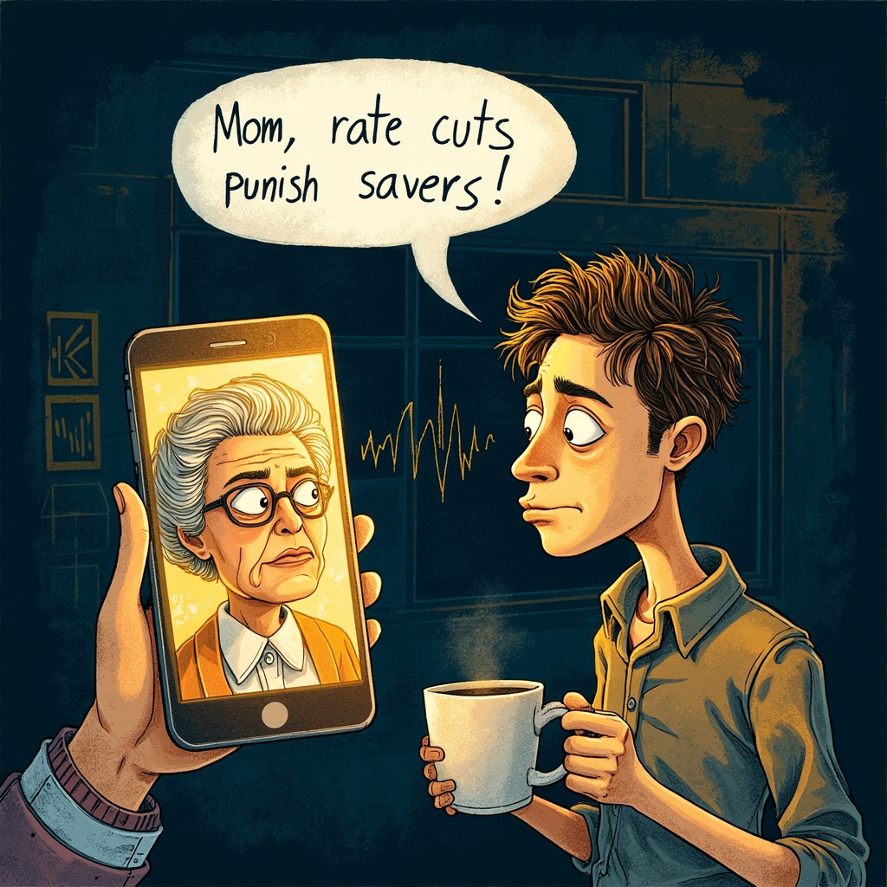
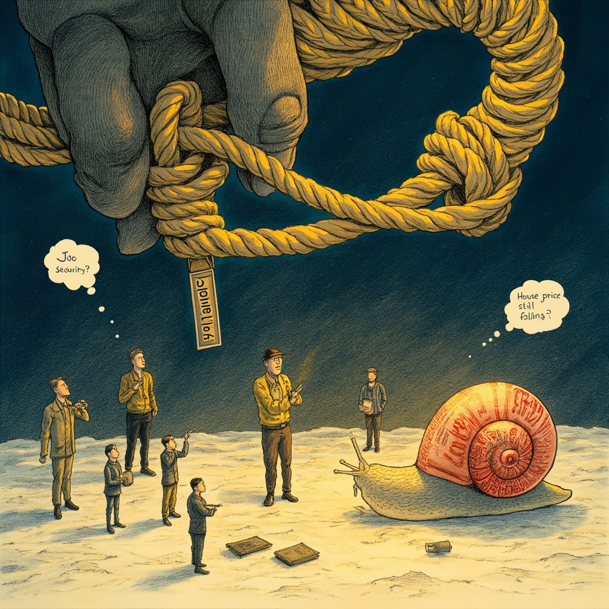

前两天我妈在家庭群转发了一条新闻：存款利率又降了，五年期定存只剩 1.3%。她发了一串 59 秒语音方阵，核心意思就一句——「开盛，这利息越来越少，钱搁银行是不是快倒贴了？」
我一边调 CSS 一边回：「妈，降息的本质就是国家在惩罚老实存钱的人，奖励敢花钱、敢背债的。」她愣了几秒回了句：「你一个码农，怎么说话跟银行行长似的？」
我说：「妈，这就是我新学的——利率，就是钱的价格。」

利率：你愿意多少钱把「今天的钱」换成「明天的钱」？
我妈没听懂「钱的价格」什么意思。我换了个说法：
假设你同事老王找你借 10 万，一年后还。你心里肯定会盘算——这 10 万我存银行一年能拿多少利息？如果银行给 3%，那老王至少得给你 3% 你才不亏。如果银行只给 1.3%，老王给你 2% 你就觉得还行。银行利率就是你和老王之间那个「公平价」的参照线。
所以央行一降息，相当于把钱的公平价拉低了。借钱的人开心（老王笑疯了），存钱的人难受（你妈焦虑了）。
利率降了，钱就坐不住了——存银行没意思，你是不是也想学老王去买点股票基金？
降息怎么影响股市？三个故事说清楚
故事一：开盛的「算了不存了」——资金搬家
你有 100 万存款，降息前银行给你 3% 一年，躺着赚 3 万，挺香。降息后只剩 1.3%，一年才 1.3 万。这时候你刷朋友圈看到前同事买了股票，去年分红率 4%。你开始算：100 万买那个股票一年拿 4 万，比存银行多 2.7 万。你心动了。千千万万个「开盛」同时心动，钱就从定期搬到了股票账户——股市被推高。但如果你心想「行情不好先别折腾」，钱就没搬家——这就是信心问题。
故事二：XX 钢厂的「凭空多出一千万」——企业减负
某制造企业借了银行 10 个亿。降息前年利率 5%，每年还 5000 万利息。降息后利率变成 4%，每年只还 4000 万。厂房还是那个厂房，工人还是那批工人，订单还是那些订单——但利润凭空多了 1000 万。基金经理一看财报：「利润涨了 20%！」秒下单，股价涨。但前提是——这家企业得活着，订单得稳定。如果订单本身在砍，省那点利息杯水车薪。
故事三：一年后的 100 块，现在值多少？——折现率
这个最反直觉，但程序员最容易理解：这就是一个贴现函数。
有人跟你说「我一年后给你 100 块」。你现在愿意花多少钱买这个承诺？银行利率 3% → 你花 97 块买，一年后拿 100 块，赚 3 块利息——公平。利率降到 1% → 你花 99 块买也不亏。
利率越低，未来的钱折回今天的折扣越小 → 同一家公司，什么都没变，股价就该涨。
LPR：每月 20 号公布的「你家房贷调节器」
上面说的是国家层面的利率，还有一个你每个月房贷扣款那天都在替你掏钱或省钱的数字——叫 LPR（贷款市场报价利率）。
简单说：央行定一个「批发价」，18 家银行每个月 20 号报一个「零售价」，然后取平均值就是 LPR。你的房贷利率 = LPR ± 浮动点数。
举个例子：你 2019 年买房，当时 5 年期 LPR 是 4.85%，银行加了 30 个基点（0.3%），房贷利率就是 5.15%。到了 2024 年，5 年期 LPR 降到 3.5%，你还是那个 +0.3%，房贷利率变成 3.8%。100 万贷款，一个月少还约 700 块——一年 8000+，够一家三口国庆旅行。
但如果你没买房，LPR 降了对你的直接影响就一个：存款利率也跟着降，你存银行的钱赚得更少了。
存款准备金率：100 块怎么变成 1000 块
这是央行的「核武器」——平时不轻易动，一动就是大招。
银行收了你的存款，不能全贷出去。比如你存了 100 块，央行规定银行必须留 10 块压箱底（准备金），只能把 90 块贷给老王。老王拿到 90 块又存进银行，银行留 9 块，再贷 81 块给老李……一直循环。原始 100 块最终在系统里变成 1000 块。
| 准备金率 | 100 块最终变成 |
|---|---|
| 20% | 500 块 |
| 10% | 1000 块 |
| 7% | 约 1428 块 |
降准 = 把这个比例降低 → 同样的 100 块能「变」出更多钱 → 市场上的钱多了 → M2 又膨胀了。
降准一次的威力 ≈ 连续降息好几次，所以央行轻易不降准。
推绳子：水龙头开再大也没人来接
降息、降准，理论上都是往市场「放水」。但灵魂问题是：水放出来了，谁来接？
经济学家管这叫「推绳子」：央行收紧货币 = 拉绳子，一拉就灵。央行放松货币 = 推绳子，推不推得动得看另一端有没有人接。
日本就是活教材。1990 年泡沫破裂后，日本央行把利率降到接近零，钱便宜得跟白送一样——但企业和老百姓就是不借。因为房价在跌、公司在裁员、收入在降，谁敢借钱？于是日本「失去了三十年」。
现在中国的困境类似：房贷月供确实少了 150 块，存款利息也少了 250 块。理论上你应该多消费，但公司没涨薪、隔壁在优化、房价在跌……150 块够一顿火锅，但不够安全感。
信心要是 0，降息效果 × 0 = 0。

算一笔心凉的账
假设你有 100 万，存 3 年定期，年利率 2.5%：
- 到期账面：107.5 万
- M2 年均增速：8%
- 实际购买力：≈ 85 万
存了三年，账上多了 7.5 万，购买力少了 15 万。你不理财，财自己溜走。
记住这一句
降息是在惩罚存钱的人，奖励敢花钱和敢投资的人。你不动，就是被惩罚的那一个。后面学的基金、债券、指数——不是为了赌，是为了让你的钱跑赢印钞机。
钱躺在银行，就像冰淇淋摆在太阳底下——不动也是在化。